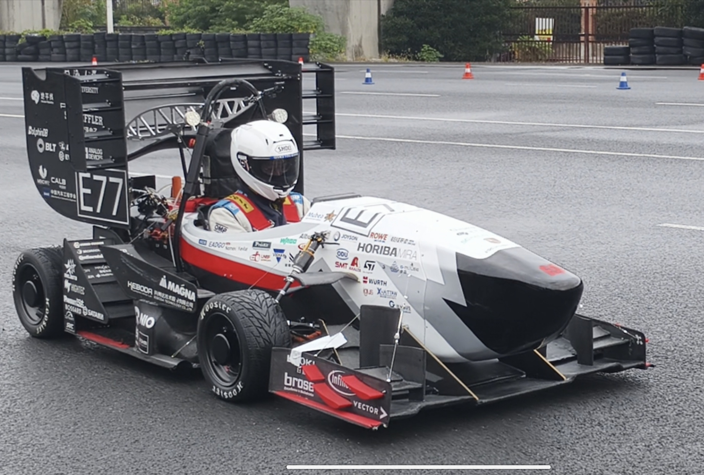
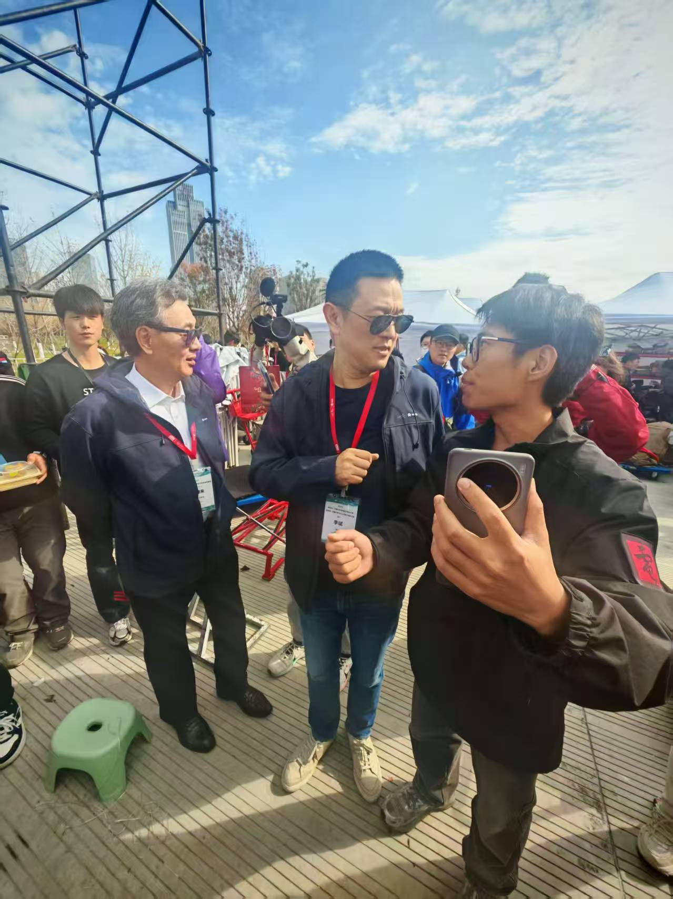
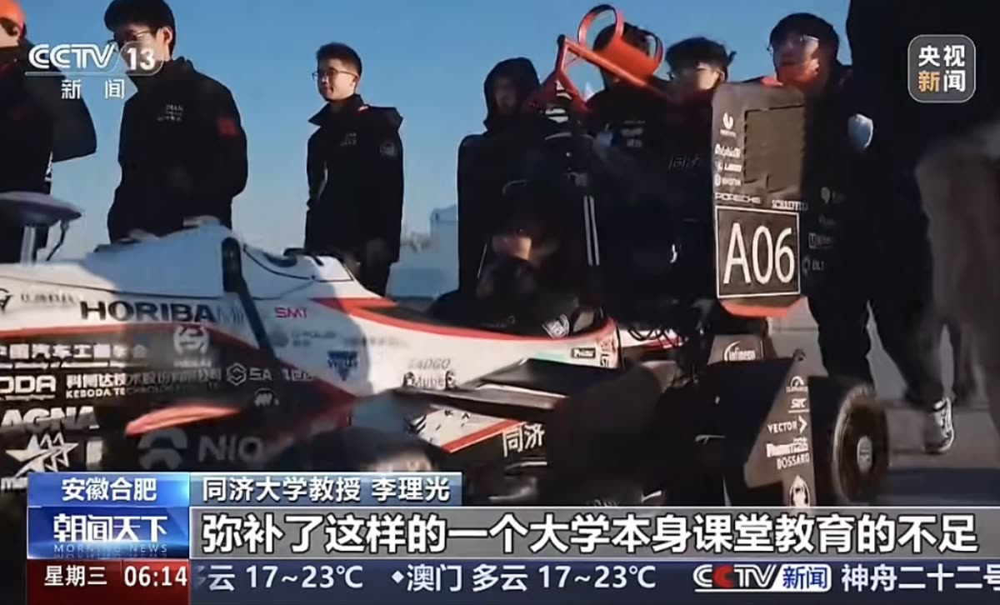
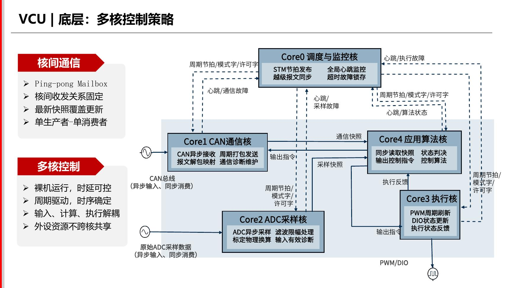
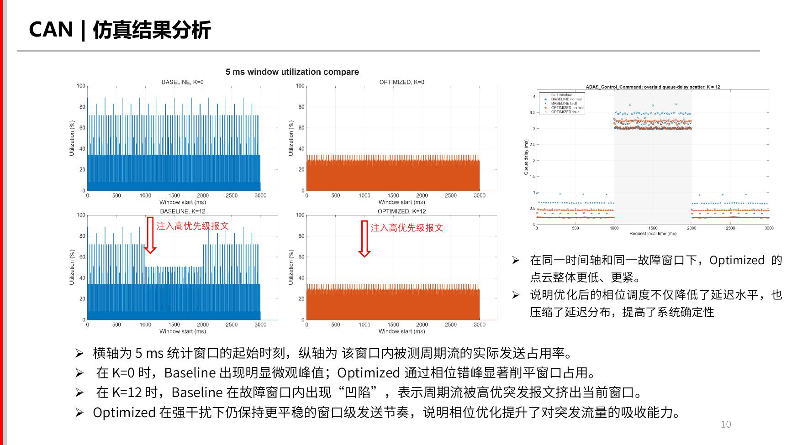
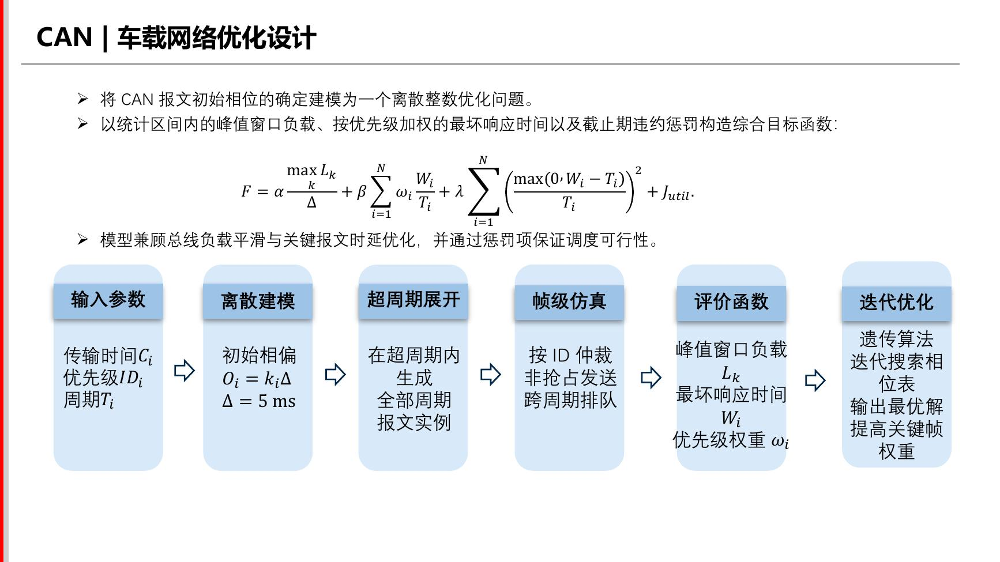
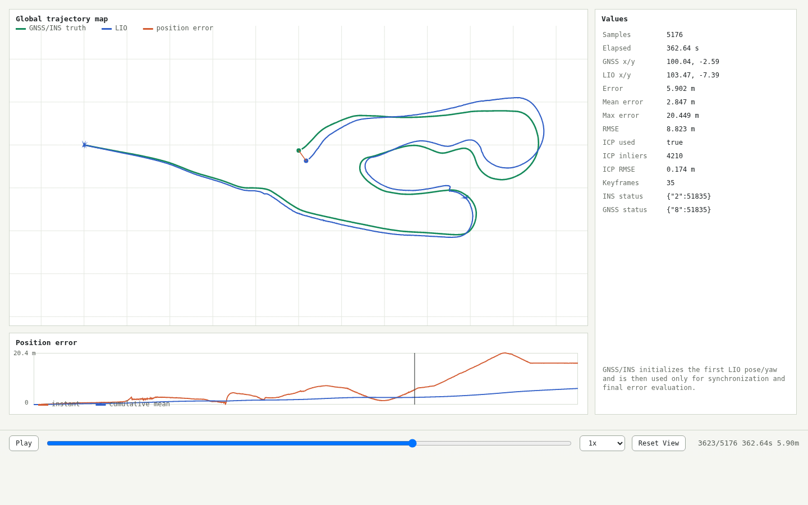
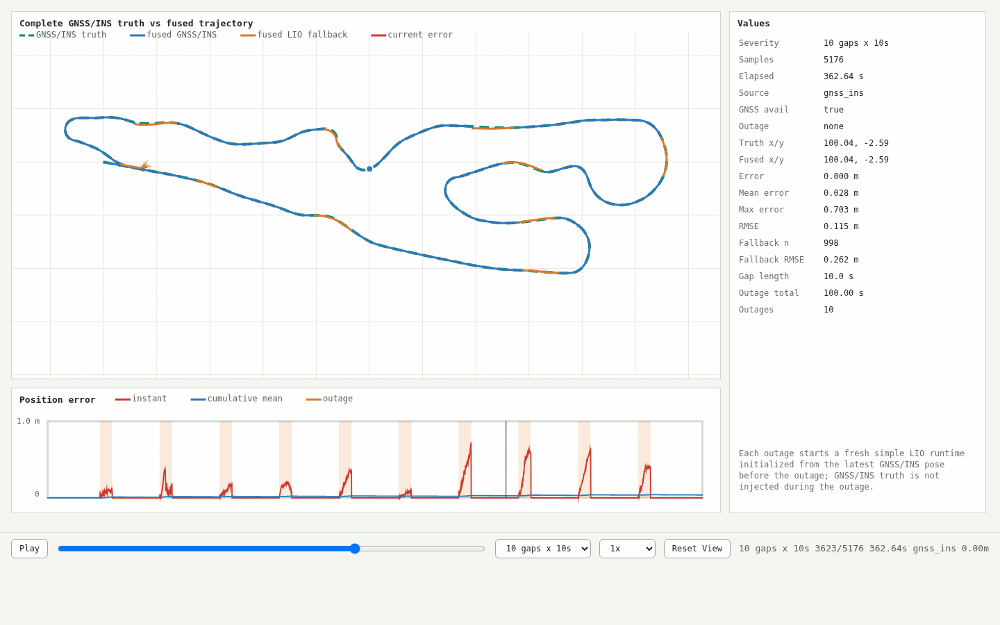
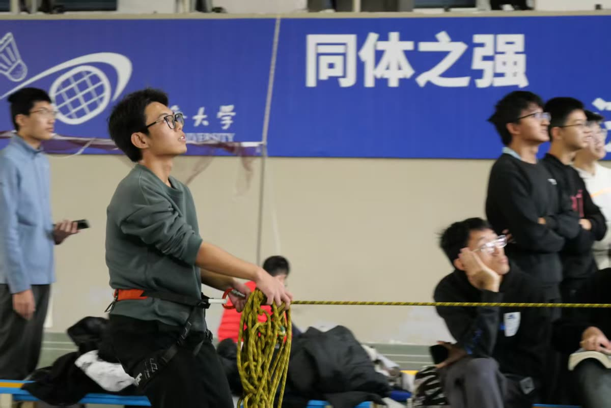

实时控制
多核 MCU 调度、状态机协同、故障降级、执行链路验证。
Application Profile
我计划在 2026 年推研中申请 2027 级深造，希望继续在自动驾驶、嵌入式实时系统、 车载网络和多传感器定位方向接受更系统的科研训练。现阶段的项目经历主要来自同济 DIAN Driverless： 我在真实赛车平台上完成控制器软件、CAN 调度优化与 LIO 冗余定位验证。
多核 MCU 调度、状态机协同、故障降级、执行链路验证。
CAN 报文相位优化、最坏响应时间、窗口负载平滑。
LiDAR-IMU 里程计、GNSS/INS 受限场景、同步评估。
Team Results

我参与的工作基于同济 DIAN Racing E77 电动方程式赛车。真实平台带来强时序、强安全、强验证约束。

向蔚来集团 CEO 李斌介绍同济无人驾驶赛车。这段经历让我更重视把复杂系统讲清楚。

项目进入公众视野，也提醒我工程工作需要经得起展示、追问和复核。
Selected Projects
2024.09 - 2025.12
独立搭建 VCU 软件架构，将驾驶员、无人系统与车辆状态收敛到可降级的整车控制中枢。

2025.03 - 2025.06
将周期 CAN 报文初始相位建模为离散整数优化问题，用相位错峰降低瞬时负载和排队延迟。


2026.01 - 至今
搭建 LiDAR-IMU 局部里程计和评估链路，验证 GNSS/INS 受限时的冗余定位能力。


Activities
担任 2026 年《数字信号处理》朋辈导师，负责课程串讲与答疑。
同济攀岩社干事；在同济攀岩友谊杯担任速度岩道安全员。
我喜欢需要专注、信任和即时判断的活动。

Contact
如果我的经历与课题组在自动驾驶、嵌入式实时系统、车载网络或多传感器定位方向有契合之处， 我很愿意补充材料、汇报项目细节，也期待得到您的建议。